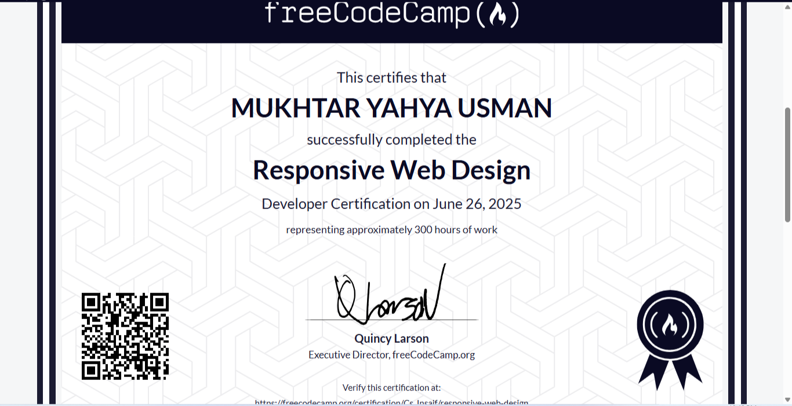

Projects & Certificates
1. MYU Global Connect
A networking and ICT support project aimed at connecting communities and training youth in digital skills.
2. Personal Portfolio Website
This responsive portfolio is built using HTML, CSS, and JavaScript to showcase my academic and professional journey.
3. Wireshark Digital Forensics Presentation
Led a group to present and demonstrate packet sniffing using Wireshark. Explained features, usage, and comparisons in a university presentation.
Certificates
- ✅ Responsive Web Design – FreeCodeCamp
- ✅ Computer Appreciation – Kano Poly Enterprise
- ✅ Soft-Skills Training – Jobberman
